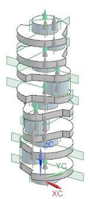
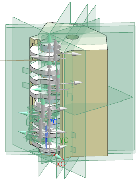

右击 drf4_eda_eng_assm 节点并选择打开→装配。
位于顶级以下的装配级别都将使用空引用集加载。
再次右击 drf4_eda_eng_assm 节点，然后选择替换引用集→整个部件。
选择文件→选项→装配加载选项。
在引用集组中，按下列顺序重新排列引用集：
|
整个部件 |
点击确定。
右击 drf4_eda_crank_w_assm 节点并选择替换引用集→整个部件。

曲轴子装配及其组件都将使用整个部件来加载到您的会话中，整个部件也将加载所有的基准特征、构造几何体以及任何位于组件部件内的其它对象。
右击 drf4_eda_eng_assm 节点并选择关闭→重新打开装配。

信息窗口将提示您现在已经修改了装配结构。
关闭信息窗口。